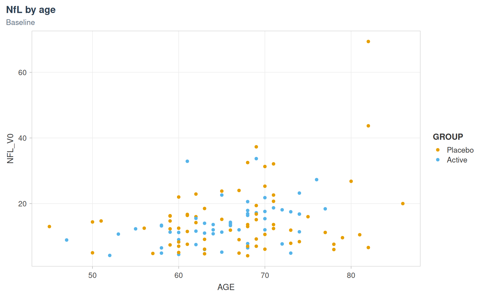
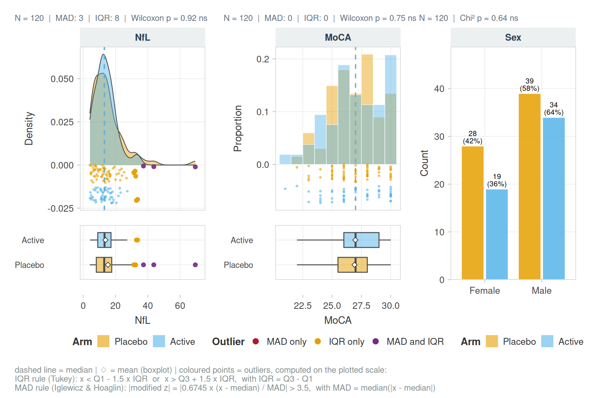
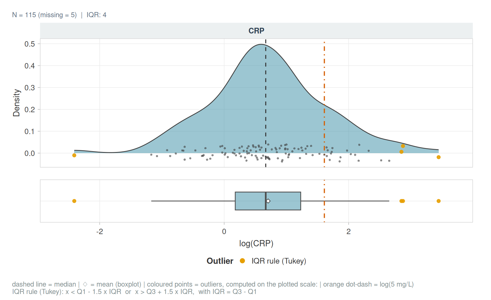
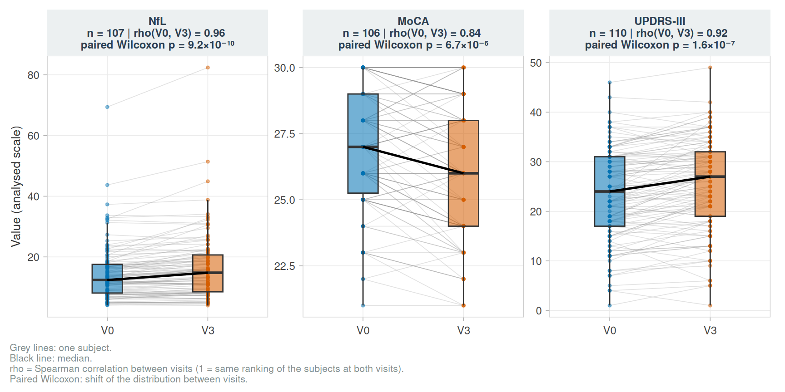
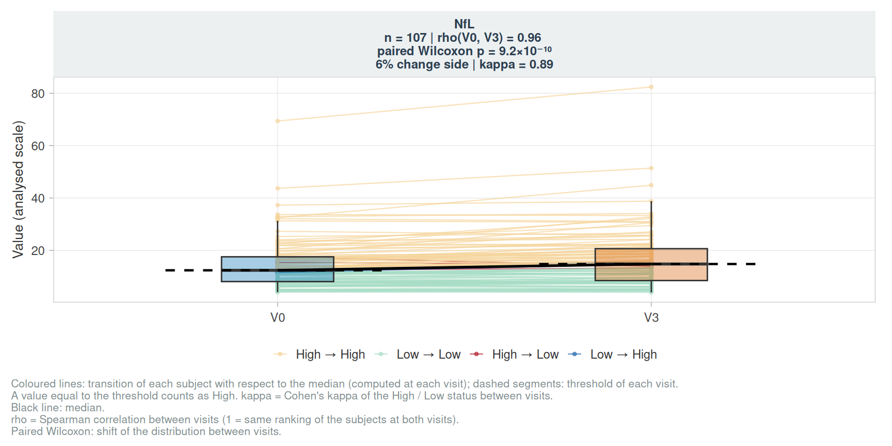
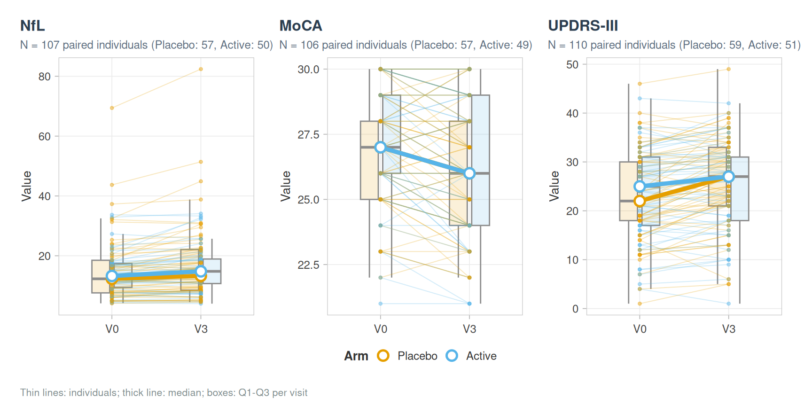
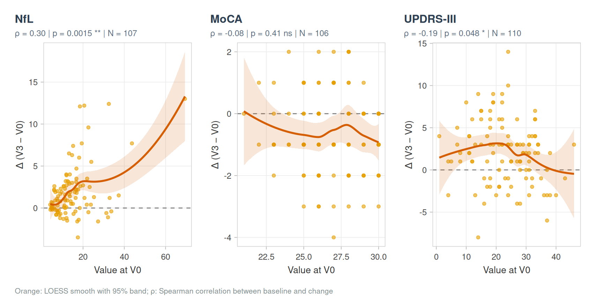
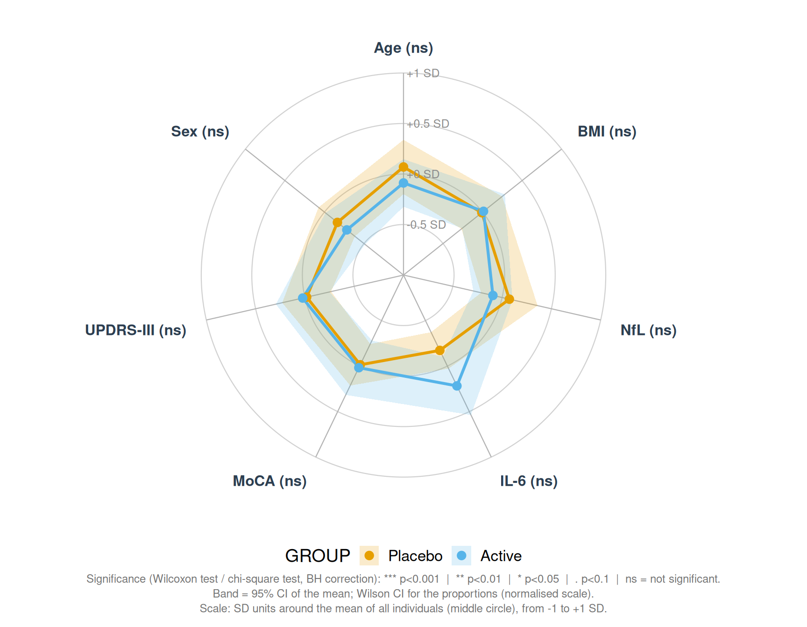
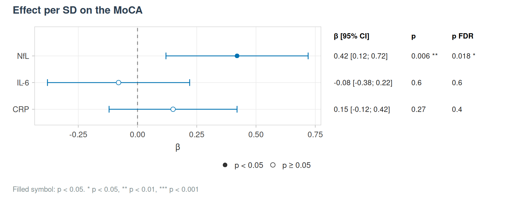

library(vernissage)
library(ggplot2)
labs <- c(NFL_V0 = "NfL", MOCA_V0 = "MoCA", UPDRS_V0 = "UPDRS-III", CRP_V0 = "CRP", SEX = "Sex",
GROUP = "Arm", AGE = "Age", BMI = "BMI", IL6_V0 = "IL-6", NFL = "NfL", MOCA = "MoCA",
UPDRS = "UPDRS-III")Theme and palettes
Every figure uses theme_pub() and the colour-blind safe Okabe-Ito palette.
ggplot(cohort_sim, aes(AGE, NFL_V0, colour = GROUP)) +
geom_point() +
scale_colour_manual(values = pal_levels(levels(cohort_sim$GROUP))) +
labs(title = "NfL by age", subtitle = "Baseline") +
theme_pub()
Distributions
Continuous variables get a density, jittered points and a boxplot; integer scores a histogram with bin width 1; categorical variables a bar chart. Outliers are coloured by the rule that flags them, and a group test is given for each panel.
p <- plot_distribution(cohort_sim, c(NFL_V0, MOCA_V0, SEX), group = GROUP, labels = labs,
outlier_mad = TRUE)
p
attr(p, "tests")
#> # A tibble: 3 × 4
#> Variable Test p p_adj_BH
#> <chr> <chr> <dbl> <dbl>
#> 1 NFL_V0 Wilcoxon 0.924 0.924
#> 2 MOCA_V0 Wilcoxon 0.747 0.924
#> 3 SEX Chi² 0.636 0.924Display transformation and reference lines:
plot_distribution(cohort_sim, CRP_V0, transform = "log", labels = labs,
ref_lines = list(CRP_V0 = log(5)), ref_label = "log(5 mg/L)")
Paired visits
plot_paired_visits(cohort_sim, c(NFL_V0, MOCA_V0, UPDRS_V0), id_col = ID, labels = labs)
plot_paired_visits(cohort_sim, NFL_V0, id_col = ID, labels = labs, transitions = TRUE)
plot_trajectory_grid(cohort_sim, c("NFL", "MOCA", "UPDRS"), id_col = ID, group = GROUP, labels = labs)
plot_delta_vs_baseline(cohort_sim, c("NFL", "MOCA", "UPDRS"), labels = labs)
Radar plot
plot_radar(cohort_sim, c(AGE, BMI, NFL_V0, IL6_V0, MOCA_V0, UPDRS_V0, SEX), group = GROUP,
labels = labs, normalize = "zscore", quali_levels = list(SEX = "Female"), seed = 1)
Forest plot
plot_forest() draws any table of estimates with their confidence intervals and p-values, e.g. results computed elsewhere.
est <- data.frame(label = c("NfL", "IL-6", "CRP"), estimate = c(0.42, -0.08, 0.15),
conf.low = c(0.12, -0.38, -0.12), conf.high = c(0.72, 0.22, 0.42),
p.value = c(0.006, 0.6, 0.27), p_adj = c(0.018, 0.6, 0.4))
plot_forest(est, p_adj = p_adj, effect_label = "β", title = "Effect per SD on the MoCA")